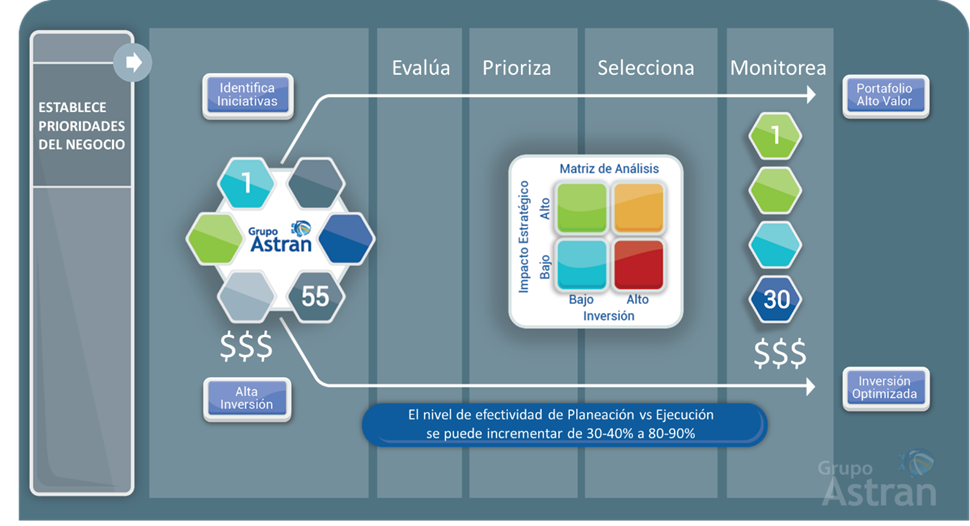

THE IMPORTANCE OF LINKING PROJECTS WITH STRATEGY
by Mauricio Alberto Berrum González
CEO GRUPO ASTRAN
October 2020
We are increasingly observing that different companies and government organizations attach greater importance to linking the strategy with the set of projects to be carried out. There is an environment in which continuous change is here to stay, and which is commonly implemented through the implementation of projects, in order to improve current results.
However, although a strategy is defined, there is an isolated vision of the projects in each area, since due to the organizational structure and the specialization of functions, managers focus on promoting projects that improve results mainly in their area, wasting the contribution of projects to the organization's strategy when there is a prioritized, consolidated Project Portfolio with a common vision.
The problem with the greatest impact is that by not having all the resources and if the environment impacts the organization, it is necessary to evaluate the projects with the highest priority, but there are very few elements to make the best decision -the project that is defended with the most zeal for the director is the one that remains, without necessarily being the one who contributes the most to the organization's strategy.-
It is critical to establish the practices and criteria that allow prioritizing the projects within a consolidated portfolio that contribute more to the achievement of the strategy, also including those projects that must be fulfilled due to regulatory considerations or risk reduction, taking into account the restrictions on available resources.
The following image represents a model to link projects with the strategy and prioritize them:
{kind=link}
This model requires integrating, aligning and standardizing several elements, of which we will mainly mention:
-
Identify the business objectives that will be used as drivers to prioritize the portfolio of initiatives and projects.
-
Identify directive sponsors with the need to optimize the portfolio and integrate a prioritization committee.
-
Prioritize the drivers in conjunction with the management team.
-
Establish processes that manage the portfolio of initiatives in a consistent way.
-
Design the evaluation that allows determining the contribution of initiatives to established priority criteria.
-
Standardize the information used to justify initiatives.
-
Generate scenarios that support decision-making by managers and allow them to visualize the strategic impact of the initiatives vs. the restrictions on resources to carry them out.
-
Select the optimized portfolio with the most valuable initiatives and with an optimal investment.
-
Possibility of integrating changes to the portfolio and generating new decision scenarios in a short time.
An optimal Project Portfolio benefits the organization by:
-
Facilitate the organization's focus on projects that generate more value and contribution to the strategy.
-
Optimize the use of resources.
-
Reduce the complexity of the portfolio of projects to be carried out.
-
Have a standard that aligns the organization.
-
Increase the level of success in achieving the strategy and the expected results.
To the extent that the planning areas link the strategy with the projects and facilitate their prioritization and optimization, the positive organizational impact is very high, because it allows information to be given to managers about which projects should be carried out with the optimal use of resources.
In our experience we have found savings in the annual budget greater than 30% investment in projects. And in other cases, before implementing this practice, of the 100% of planned projects, the organizations only managed, on average, at the end of the annual cycle, to carry out between 30-40% of the planned projects. After implementing the portfolio optimization practice, project completion is increased by up to 80-90% of what was planned, spending less resources.